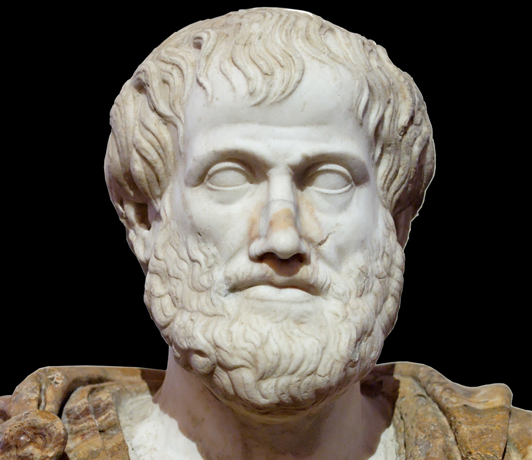
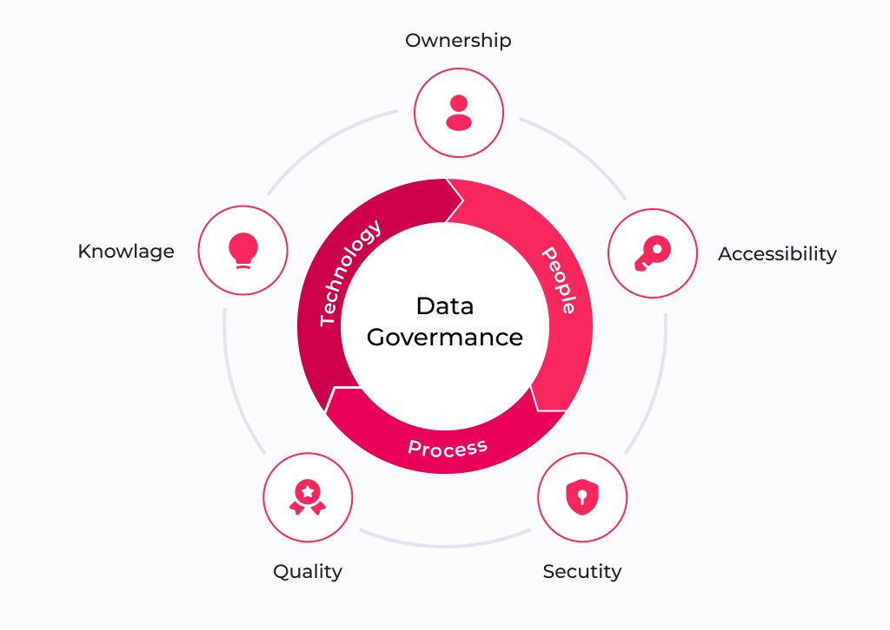

Todo proceso de datos comienza con una pregunta clave: ¿de dónde vienen? El origen y la captura de datos abarca las fuentes, métodos y estrategias que permiten recolectar información de forma estructurada y confiable, sentando las bases para cualquier análisis posterior.

Aristóteles fue uno de los primeros en intentar sistematizar el razonamiento humano mediante reglas lógicas. Sus ideas inspiraron siglos después el concepto de razonamiento computacional.
Gottfried Wilhelm Leibniz soñó con crear una “máquina de razonamiento” que pudiera realizar deducciones lógicas, anticipando la noción de una computadora simbólica.

La Data Governance (Gobernanza de Datos) es el conjunto de políticas, procesos, normas y responsabilidades que una organización establece para gestionar sus datos de forma segura, organizada y de calidad.
Los metadatos son datos que describen otros datos: su origen, formato, fecha de creación y quién los generó. La procedencia rastrea el recorrido completo del dato, garantizando su trazabilidad, confiabilidad y cumplimiento normativo a lo largo del ciclo de vida.
“Podemos considerar que el razonamiento es una forma de cálculo.” — Leibniz